Ölüm Dairesi WikiDepartment of Death · resmî oyuncu rehberi
DOSYA NO. 2.847.113
01 · MADDEOyun hakkında
Ölüm Dairesi (İngilizce adı Department of Death), SE Logic'in geliştirdiği kara mizahlı, aktif bir incremental oyun. Emekli olup ortadan kaybolan Azrail'in yerine alınan stajyer olarak ruhları biçer, ofis kulesinde mühürler, aylık kotayı tutturur ve rütbe rütbe yükselirsiniz.
Oyun iki ekran arasında geçer. Dünya'da kum saati dolan kişileri biçip kaçan ruhlarını ağla yakalarsınız. Boşlukta süzülen ofis kulesi'nde ise o ruhların öbür tarafa geçiş belgelerini zamanlamalı bir dokunuşla mühürlersiniz. Ay süresi iki ekranda da akar ve ay sonunda yalnızca mühürlenmiş ruhlar kotaya sayılır. Bu yüzden oyun boyunca kendinize hep aynı soruyu sorarsınız: biraz daha mı biçsem, yoksa ofise dönüp mühürlesem mi?
Oyun açıkken oynanır. Uygulama kapalıyken ilerleme ya da çevrimdışı kazanç yoktur. Oyun bir sonu olan hikâyeye sahiptir; finalden sonra sınırsız bir mod açılır.
Bu sayfa oyunun geliştirme sürümüne göre yazıldı. Sayılar ve isimler çıkışa kadar değişebilir. Hikâyenin sürprizleri kırmızı spoiler kutularında gizli; açmadıkça görünmez.
02 · MADDEHikâye
Ölüm Dairesi, ölüleri öbür tarafa geçiren kadim bir devlet dairesidir. Binlerce yıldır kâğıt üstünde işler: her ölümün bir dosyası, her ruhun mühürlü bir formu vardır ve mühürsüz ruh öbür tarafa geçemez.
Dairenin tek saha görevlisi Azrail, 4000 yıl boyunca her ölümü kendisi yaptı. Bir gün masasına "Tükenmişlik İzni — Süresiz" yazan bir form bırakıp ortadan kayboldu. Ölümler gecikmeye, ruhlar ortada kalmaya, köylerde "ölemeyen" huysuz insanlar çoğalmaya başladı. Daire panikle staj ilanı verdi.
Siz, öbür tarafa geçiş formunu eksiksiz dolduran tek ruhsunuz. Bu yüzden işe alındınız. Dosya numaranız 2.847.113; patronunuz size kısaca "Yüzonüç" diyor.
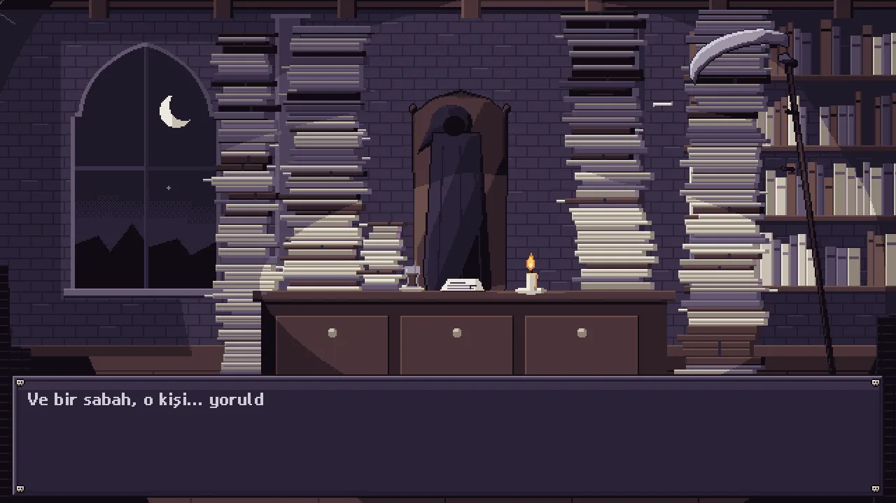
Açılış videosu: Azrail'in boş kalan masası.Nermin Hanım yeni stajyerin formunu inceliyor.
Dosya 0001
Arşivin en eski dosyası. Dünyada ölmesi planlanan ilk kişinin dosyasıdır ve 4000 yıldır üstünde "gecikmiş" damgası taşır. Kimse açmaya cesaret edemez. Oyun boyunca her bölgede bu dosyanın ipuçlarını toplarsınız.
Büyük spoiler: Dosya 0001'in sırrı Hikâyenin ana sürprizini açar
Dosya 0001, Azrail'in kendi dosyasıdır. Dünyanın ilk ölümü planlandığında sıradaki isim Ekrem adında bir çobandı. O gün ruhları götürecek kimse yoktu; Ekrem ölmek yerine ilk ruhu kendisi götürdü ve Azrail oldu. Kendi dosyası hiç kapanmadı.
4000 yıl sonra hiç yaşamadığı "hayatın ortasını" merak edip insan kılığına girdi. Her bölgede gördüğünüz, hiç yaşlanmayan Ebedi Ekrem odur: köyde bakkal, şehirde saatçi, savaşta sıhhiyeci, okyanusta fener bekçisi, antik krallıkta kâhin.
Büyük spoiler: Final ve sonlar Son bölgenin sonunu anlatır
Ölmeyenlerin Diyarı'nın 5. ayında patron ruh olarak Dosya 0001 çıkar: dev, yorgun, uykulu bir yaşlı adam ruhu. Masaya geldiğinde size tek bir seçim sunulur.
Mühürle: Dosya kapanır. Azrail 4000 yıl sonra ilk kez dinlenir ve stajyer yeni Azrail olur. Bay Kuzgun ağlar ama "Bu gözyaşı yönetmeliğe aykırı" der.
Formu yırt: Stajyer dosyayı yırtar ve Ekrem'e bir hayat verir. Ekrem tacını bırakıp köyde bakkal açar. Stajyer yine Azrail olur, ama artık "gecikmiş" damgası taşıyan tek dosya ona aittir.
Gizli son: 18 ipucunun hepsini topladıysanız, seçtiğiniz sonun ardından o sona ait gizli bir sahne açılır. Ekrem ile Bay Kuzgun köy bakkalında çay içer ve Ekrem, stajyerin kusursuz geçiş formunu masaya koyar. El yazısı onunkidir. "İyi seçmişim," der.
03 · MADDEKarakterler
Karakter
Kim
Oyundaki yeri
Stajyer ("Yüzonüç")
Yeni ölmüş sıradan bir memur. Kocaman kafatası, küçük gövde ve paslı dev tırpan. Konuşmaz, yüz ifadeleriyle tepki verir. Beceriksiz ama azimli.
Sizsiniz.
Bay Kuzgun (EN: Mr. Corvin)
Kravatlı iskelet kuzgun, dairenin müdür vekili. Kota takıntılı, huysuz, iğneleyici. Her lafını bir yönetmelik maddesine bağlar.
Patronunuz. Kotayı söyler, ay sonu raporunu okur, terfi verir.
Nermin Hanım
İnsan Kaynakları hayaleti. Aşırı nazik, aşırı bürokrat, her şeye form ister. Gülümsemesi biraz ürkütücü.
Öğretici, işe alım ve reenkarnasyon.
Kemikçi Kâmil
Arşivci iskelet. Dedikoducu, koleksiyoncu ve komplo teorisyeni.
Arşiv katı, Son Sözler albümü, ipucu panosu.
Ebedi Ekrem
Her bölgede başka kılıkta karşınıza çıkan, hiç yaşlanmayan adam. Sakin, yorgun ve nazik. Köyde bakkal dükkânı işletir.
Bakkal, Akçe alışverişi, Dosya 0001 ipuçları.
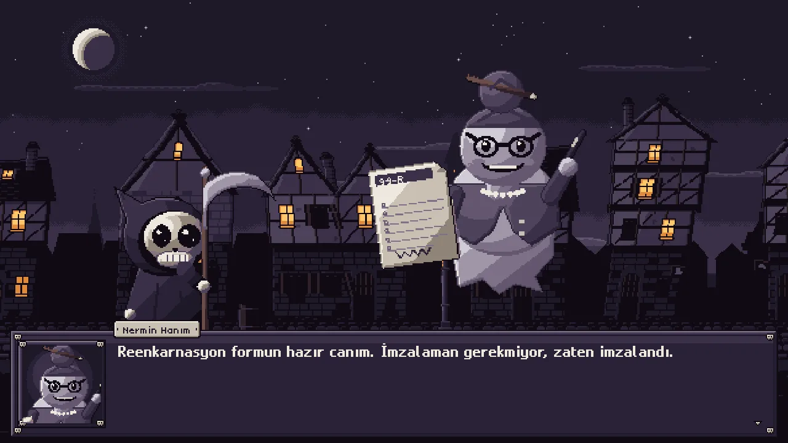
Nermin Hanım: "Reenkarnasyon formun hazır canım. İmzalaman gerekmiyor, zaten imzaladın."
04 · MADDENasıl oynanır
BiçKum saati kırmızı yanan kişiye dokun.
YakalaKaçan ruha dokun, çuvala at.
MühürleKulede formu tam zamanında mühürle.
GelişMühürle geliştirme ve kat al, dünyaya dön.
Dünya: biçmek ve yakalamak
Sokak yatay kayar ve yaklaşık üç ekran genişliğindedir. Parmağınızı sürükleyerek kamerayı kaydırırsınız; üstteki mini harita hazır kişileri kırmızı noktayla gösterir. Herkesin başında bir kum saati vardır.
Hazır kişi: Kum saati dolunca kırmızı yanar ve sallanır. Ona dokunursanız stajyer koşup tırpanı savurur. Hazır olmayan birine dokunmak bir şey yapmaz; kişi sadece "Ne var?" der.
Gecikme: Hazır penceresi (başta 6 saniye) kaçarsa kişi bayılır, ayın kotası 1 düşer ve kişi bir gün sonra yeniden kum saatiyle gelir.
Ruh kaçışı: Biçilen kişinin ruhu yarım saniye sonra en yakın ekran kenarına kaçar. Dokunup ağla yakalarsanız çuvala uçar. Kenara ulaşan ruh kaybolur.
Çuval: Başta 5 ruh alır. Çuval doluyken çıkan ruhlar yakalanamaz ve kaçar. Sağ alttaki Ofis kapısı her an açıktır.
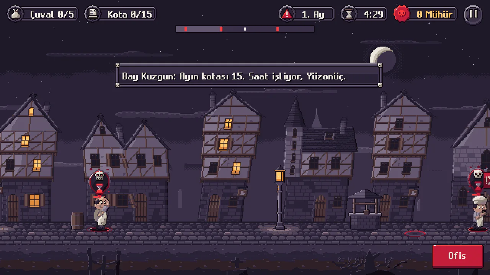
Gotik Köy. Üst barda çuval, kota, ay, kalan süre ve Mühür."Ruh kaçıyor! Kaçan ruh kotadan sayılmaz."
Ofis: mühürlemek
Yakalanan ruhlar kuleye girince Kabul katında sıra numarası alır. Sırası gelen ruh mühür masasına oturur, bir laf eder ve önünüze Ölüm Belgesi gelir. Formun üstünde bir imleç sağa sola gider. Doğru anda dokunun:
lekeli
iyi
mükemmel
iyi
lekeli
Mühür
Bölge
Ödül
Kombo
Mükemmel
Çubuğun %15'i, ortadaki kırmızı alan
×2 Mühür
+1
İyi
Çubuğun %45'i
×1 Mühür
sıfırlanır
Lekeli
Geri kalan her yer
×0,5 Mühür
sıfırlanır
Üçü de kotaya 1 ruh olarak sayılır. Lekeli mühür de mühürdür; sadece daha az para getirir.
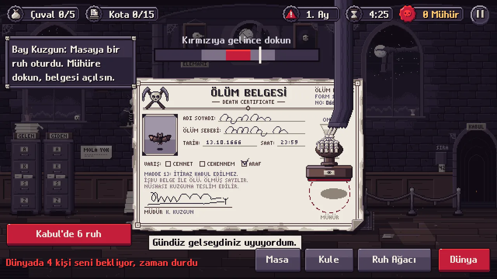
Mühür masası. Kırmızı alan mükemmel mühür demek.
Ofisteyken, Ruh Ağacı'nda ya da odalardayken dünyada yeni ölüm başlamaz. Zaten kırmızı yanan kişilerin süresi dörtte bir hızla azalır. Dünyaya dönünce bekleyen ölümler birer birer gelir. İskelet Biçici aldıysanız köy siz yokken de işlemeye devam eder.
Ay, kota ve uyarı
Bir ay gerçek zamanda 5 dakika sürer. Ay başında Bay Kuzgun kotayı söyler; HUD'da mühürlenen / kota olarak görünür. Ay bitince Ay Sonu Raporu açılır.
Kota tuttuysa: Kotayı aşan her ruh için prim alırsınız ve sonraki aya geçersiniz.
Kota tutmadıysa: Bir uyarı alırsınız (raporda söndürülmüş bir mum). Uyarılar bölge boyunca birikir, terfide sıfırlanır.
Çuvalda ve kuyrukta kalan ruhlar sonraki aya devreder ama bu ayın kotasına sayılmaz.
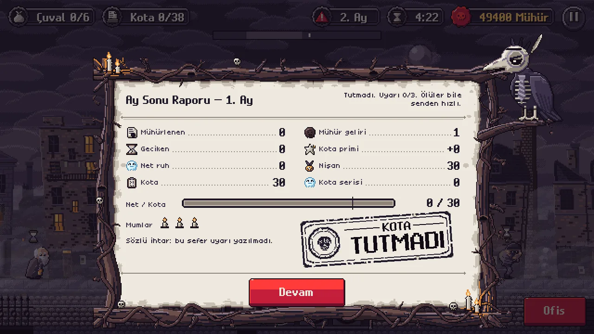
Ay Sonu Raporu. Bu sefer olmadı.
Reenkarnasyon
Üçüncü uyarıda stajyer kurbağa olarak yeniden doğar ve bölgenin başına dönersiniz. Mühür, oda geliştirmeleri ve uyarılar sıfırlanır. Kule katları, Nişanlar, Ruh Ağacı, kartlar, ipuçları ve başarımlar kalır. Tekrar deneyen biraz daha güçlü başlasın diye her reenkarnasyon Ruh Tecrübesi verir (her biri Mühür +%5, en fazla 3).
Terfi
Her bölge 5 aydır. 5. ay terfi ayıdır: kotayı tutturmanın yanında bölgenin patron ruhunu da yakalayıp mühürlemeniz gerekir. İkisi birden olursa terfi edersiniz: yeni rütbe, yeni bölge, Nişan ve bir terfi ödülü. Terfiden önce elinizde kalan Mühür'ü kule katlarına harcayabilirsiniz, çünkü terfide Mühür ve oda geliştirmeleri sıfırlanır.
05 · MADDERuh tipleri
Her bölgede farklı insanlar yaşar ve her biri farklı bir ruh bırakır. Değer çarpanı, o ruhun kaç Mühür ettiğini gösterir.
Ruh
Davranış
Değer
Huysuz
Düz çizgide yavaşça kaçar.
×1
Sıska koşucu
Neredeyse iki kat hızlı ve zikzak çizerek kaçar.
×1,2
Zırhlı şövalye
Yakalamak için iki dokunuş gerekir.
×1,5
Para çuvallı
Yakalanınca anında üç katı değerinde Mühür verir.
×3
Boğulmuş
Düzenli aralıklarla suya dalar; dalarken dokunulamaz.
×1,4
Kedi
Bir kez kaçıp yeniden belirir; iki kez yakalanmalı.
×2
İkizler
Çıkınca ikiye bölünür; ikisi ayrı ayrı yakalanır.
×0,8 + ×0,8
Sis ruhu
Sisin içinde görünmez. Ruh Kokusu ya da sis feneri gösterir.
×1,3
Mumya
Antik Krallık'ta biçilen kişi bazen mumya olarak yeniden kalkar.
×1,6
Patron ruh
Yavaş ama sekiz dokunuş ister ve her dört dokunuşta yer değiştirir.
×20
06 · MADDEBölgeler ve rütbeler
Oyun altı bölgeden oluşur. Her bölge bir rütbeye karşılık gelir ve kendine özgü bir mekanik getirir. Kotalar bölgeden bölgeye büyür.
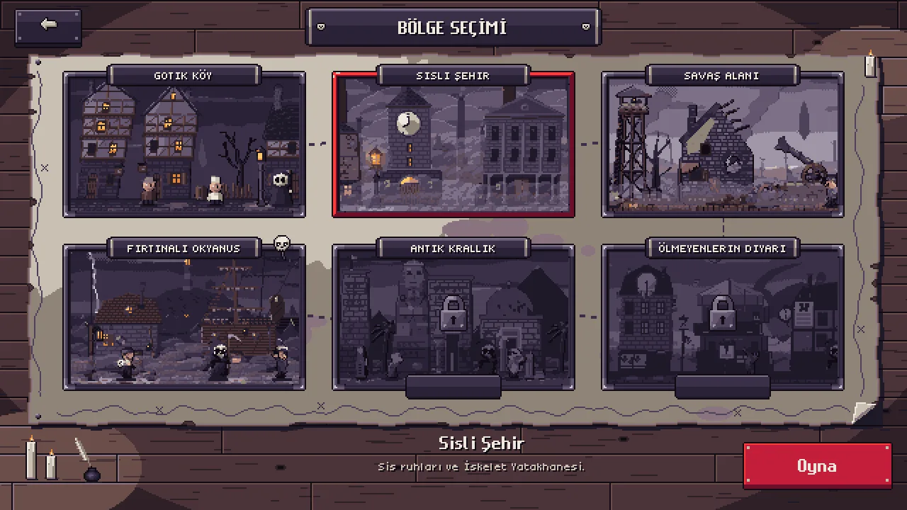
Bölge seçimi ekranı.
BÖLGE 1 · STAJYER
Gotik Köy
Eğri çatılı evler, fırıncılar, nineler ve boğaya güvenen çiftçiler. Temel döngüyü burada öğrenirsiniz.
Mekanik
Öğretici, temel döngü
Patron
Dev Öfkeli Değirmenci
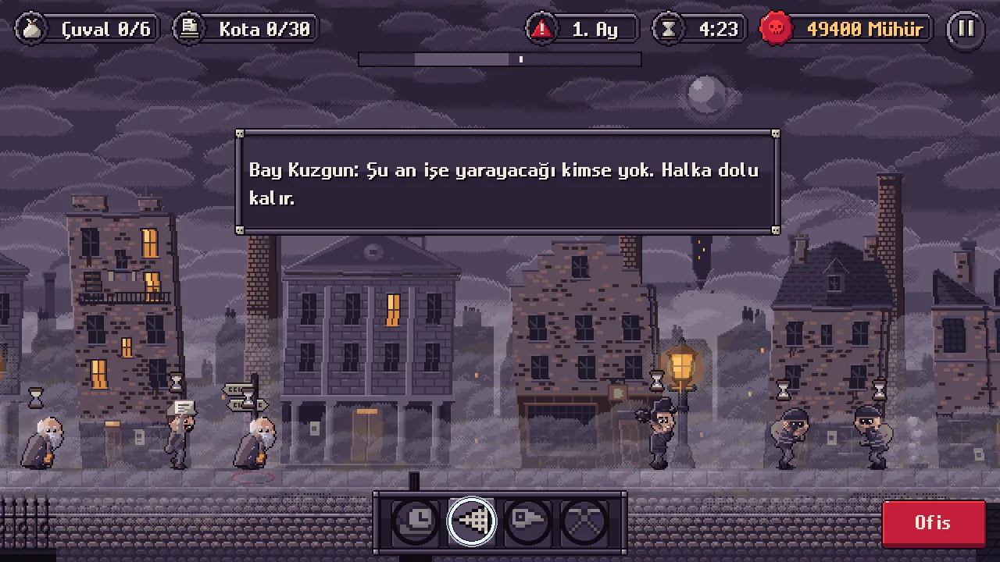
BÖLGE 2 · MEMUR
Sisli Şehir
Fabrika bacaları ve gaz lambaları. Sisin içinde bazı ruhlar görünmez olur.
Mekanik
Sis ruhları, İskelet Yatakhanesi açılır
Patron
Fabrika Patronu
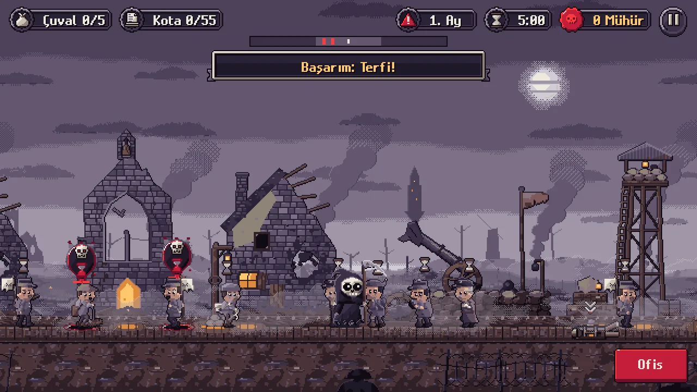
BÖLGE 3 · ŞEF
Savaş Alanı
Yıkık kiliseler, siperler ve dikenli teller. Ölümler borazan sesiyle, dalgalar halinde gelir.
Mekanik
Ölüm dalgaları: üç kişi birden hazır olur, ama pencere 2 saniye daha uzun
Patron
Ölmeyi Reddeden General
BÖLGE 4 · KIDEMLİ ŞEF
Fırtınalı Okyanus
Batık direkler ve sallanan güverteler. Boğulmuş ruhlar suya dalar.
Mekanik
Gelgit: her 20 saniyede bir dalga güverteyi yalar, insanları ve ruhları sürükler. 2,5 saniye önceden uyarı sesi gelir.
Patron
Batık Geminin Kaptanı
BÖLGE 5 · MÜDÜR
Antik Krallık
Çöl, kerpiç evler ve piramitler. Ölüler pek de ölü kalmaz.
Mekanik
Mumyalar: biçilen kişi %25 ihtimalle mumya olarak kalkar. Kaçırırsanız ceza yok, bonus ruhtur.
Patron
Firavun (yakalanınca ikiye bölünür)
BÖLGE 6 · AZRAİL VEKİLİ
Ölmeyenlerin Diyarı
Soluk, sisli ve sessiz bir yer. Burada zaman bile kararsız.
Mekanik
Geri akan kum: hazır bir kum saati aniden geri akabilir; kişi 7 saniye sonra yeniden hazır olur.
Her bölgenin 5. ayında, ayın ortasında sokağın ortasındaki patron mekânında dev bir ruh belirir. 20 saniye ekranda kalır; kaçarsa bir dakika sonra yeniden gelir. Ay biter ve patron yakalanmamışsa ay "tutmadı" sayılır ve 5. ay tekrar oynanır.
Bölge
Patron
Mekân
Son sözü
Gotik Köy
Dev Öfkeli Değirmenci
Değirmen
"Kimse beni bir yere götüremez! Unum yarım kaldı!"
Sisli Şehir
Fabrika Patronu
Fabrika
Para çuvallı dev bir ruh
Savaş Alanı
Ölmeyi Reddeden General
Siperli tepe
"Geri çekilmek yok! Ölmek de yok! İkisi aynı emir!"
Fırtınalı Okyanus
Batık Geminin Kaptanı
Batık gemi
"Kaptan gemisini terk etmez! Gemi beni terk etti, ama bu teknik bir ayrıntı!"
Antik Krallık
Firavun
Büyük piramit girişi
"Ben bir tanrıyım! Tanrılar ölmez! Bunu fermanla belgeledim!"
Ölmeyenlerin Diyarı
Dosya 0001
Devin boş yatağı
"Uzun uyudum. Ama sanırım beni almaya gelen biri var."
Firavun bir kez yakalanınca iki küçük ikize bölünür; her ikiz 4 dokunuş ister ve patron ancak ikisi de yakalanınca çuvala girer. İkizlerden biri kaçarsa öbürü de gider.
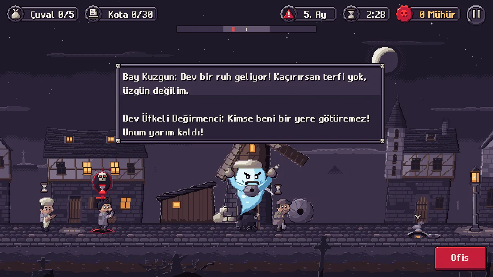
Dev Öfkeli Değirmenci, değirmenin önünde.
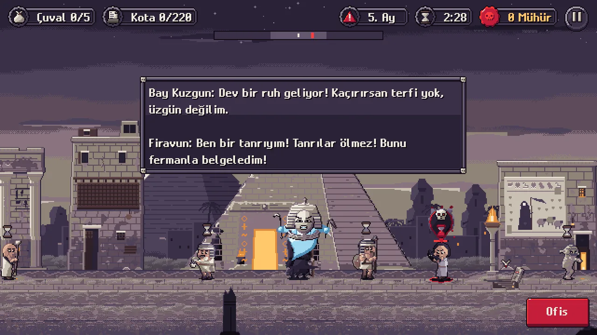
Firavun, piramit girişinde.
08 · MADDEKule ve odalar
Ölüm Dairesi boşlukta süzülen eğri bir kulede çalışır. Kuleyi kat kat Mühür ile satın alıp büyütürsünüz ve katlar kalıcıdır; terfide ya da reenkarnasyonda kaybolmaz. Her kat girilebilen bir odadır: dokunulabilir eşyaları, küçük bir bonus mini oyunu ve o odada işleyen geliştirmeleri satan bir panosu vardır. Odadayken dünyada zaman durur.
Ruhların numara aldığı bekleme salonu. İçeri dolan ruhları tabelası doğru olan sıraya sürükleyin (Huysuz, Sıska, Zırhlı, Hayvan). Stajyerin dolabında Tırpan ve Ağ geliştirmeleri satılır.
Mühür Masası
Baştan açık · Ofis ekranının kendisi
Formların mühürlendiği masa. Masa butonu mühür geliştirmelerini açar.
Arşiv
Mini oyun: Dosyala
Kemikçi Kâmil'in tozlu rafları. Mühürlediğiniz formlar burada birikir; her formu soyadının ilk harfine göre doğru çekmeceye (A–Ç, D–K, L–R, S–Z) atın. Doğru dosyalar Mühür ve arada bir Son Sözler kartı verir. Son Sözler albümü de buradadır.
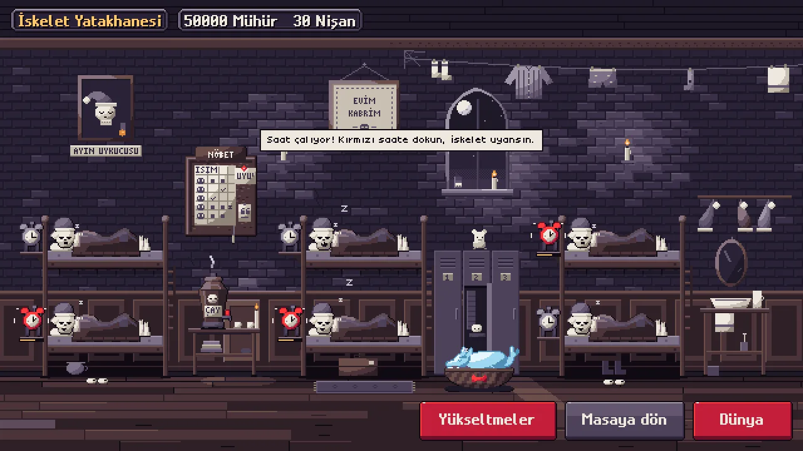
İskelet Yatakhanesi
Mini oyun: Uyandırma
Mesai bitince iskeletlerin uyuduğu ranzalar. Çalan çalar saatlere zamanında dokunun, uyanan iskeletler bir süre Mesai Coşkusu ile daha hızlı çalışır. Bütün Personel geliştirmeleri burada satılır.
Muhasebe
Mini oyun: Defteri Denkleştir · ayda bir
Abaküsler ve hiç kapanmayan bir hesap. Defterdeki sayıyı kum saati bitmeden abaküste kurun, elinizdeki Mühür'e faiz alın. Kat İndirimi ve Rüşvet burada.
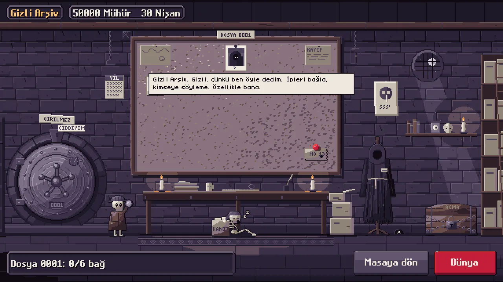
Gizli Arşiv
Mini oyun: İpleri Bağla
Kasa kapısı, mumlar ve kırmızı ipli komplo panosu. Birbirine ait iki ipucu arasına ip gerin; her doğru çift kısa bir hikâye notu açar ve 1 Nişan verir, bütün pano +3 Nişan.
Kuzgun'un Balkonu
Şef rütbesinde açılır
Bay Kuzgun bütün bölgeyi buradan izler. Teleskoptan bu ayın ilerlemesine bakabilir, bölge haritasını görebilirsiniz.
09 · MADDEGeliştirmeler
Oyunda iki para birimiyle iki tür geliştirme vardır.
Oda geliştirmeleri
Ruh Ağacı
Para
Mühür (her mühürlenen ruhtan)
Nişan (terfi, ipucu, albüm, nadir postalar)
Nerede
Kule odalarının panolarında
Kulenin çatısındaki ölü ağaç
Terfide
Sıfırlanır
Kalıcıdır
Sayı
4 dal × 9 düğüm
8 kök düğüm + 4 gövde hattı
Panoda her satır etkinin "şimdi → sonraki" halini birimiyle gösterir; örneğin Tırpan süresi 0,40 sn → 0,35 sn. Üst kademeler bölge ilerledikçe açılır (K3 ikinci bölgeden, K4 üçüncü bölgeden).
Biçme dalı · Kabul, "Tırpan" sekmesi
Düğüm
Etki
Keskin Tırpan
Savuruş süresi kısalır (0,40 sn'den 0,16 sn'ye kadar)
Koşar Adım
Stajyer daha hızlı koşar
Sabırlı Kum
Hazır penceresi uzar (6 sn'den 8,5 sn'ye kadar)
Uzun Sap
Biçme menzili artar, stajyer daha az yürür
Önsezi
Kum saati hazır olmadan 1,5 sn önce sarı yanıp söner
Geniş Savuruş
Tek savuruş yakındaki 1–3 hazır kişiyi daha biçer
Uysal Ruhlar
Bazı ruhlar kaçmadan doğrudan çuvala girer
Kum Saati Çevir
Yetenek (aşağıya bakın)
Ölüm Defteri
Yetenek (aşağıya bakın)
Yakalama dalı · Kabul, "Ağ" sekmesi
Düğüm
Etki
Büyük Ağ
Ağın yakalama alanı büyür
Geniş Çuval
Çuval +2 (en fazla 15)
Ağır Ruhlar
Ruhlar daha yavaş kaçar
Ruh Mıknatısı
Ruhlar stajyere doğru çekilir
Ruh Vakumu
Yetenek (aşağıya bakın)
Geri Dönen Ruhlar
Kaçan ruh bazen ekranın öbür ucundan geri girer
Ruh Kokusu
Ruhlar mini haritada görünür, sis ruhları yarı görünür olur
Taşıyıcı Kuzgunlar
Çuval doluyken kuzgunlar ruhları kuyruğa taşır
Zırh Delici
Zırhlı, kedi ve patron ruhlarda her dokunuş 2 sayılır
Ruhlar masaya daha hızlı gelir, imleç turu kısalır
Kota Primi
Masa
Kota primi +%50
Toplu Mühür
Masa
Tek dokunuşla 2–4 form mühürlenir
Kombo Mühür
Masa
Art arda mükemmellerde artan çarpan
Kat İndirimi
Muhasebe
Kule katları %10 ucuzlar
Rapor Makyajı
Arşiv
Kotanın küçük bir eksiği "tuttu" sayılır (primsiz)
Rüşvet
Muhasebe
Ayda bir, Mühür karşılığında bir uyarı silinir
Personel dalı · İskelet Yatakhanesi
İskelet ordunuz. Bu dal için Yatakhane katını açmış olmanız gerekir.
Düğüm
Etki
İskelet Kâtip
Ofiste kendiliğinden "iyi" mühür basar
İskelet Taşıyıcı
Çuvaldaki ruhları kuyruğa taşır
İskelet Biçici
Dünyada stajyerin yanında yürür, hazır kişileri biçer. Siz ofisteyken de çalışır.
Hayalet Tazı
Kaçan ruhları kovalayıp yakalar
Fazla Mesai
Bütün iskeletler +%15 hızlı
Sendika
Kâtip mühürlerinin bir kısmı mükemmel olur
Kuzgun Sürüsü
Yetenek (aşağıya bakın)
Vardiya
İkinci kâtip ve ikinci biçici
Yönetim Kurulu
Bütün personel etkileri +%25
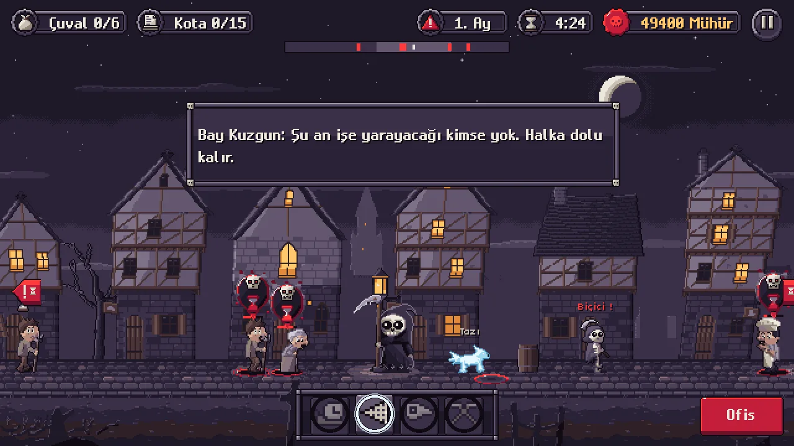
İskelet Biçici ve Hayalet Tazı iş başında.
Ruh Ağacı · kalıcı güçler
Ofiste yukarı kaydırınca kulenin çatısındaki dev, ölü ağaç açılır. Buradaki düğümler Nişan ile alınır ve oyun boyunca hiç sıfırlanmaz.
Ruh Ağacı.
Kök düğüm
Etki
Tecrübe
Bütün Mühür kazancı +%10 / seviye
Cep Harçlığı
Her bölgeye bir miktar Mühürle başlarsınız
Kıdem
Başlangıç çuvalı +1
Kuzgunun Gözdesi
Her bölgedeki ilk uyarı "sözlü ihtar" olur ve sayılmaz
Hatıralar
Son Sözler kartı bulma şansı artar
Hızlı Öğrenen
Oda geliştirmeleri ucuzlar
Eski Dost
Her bölgeye bir İskelet Kâtiple başlarsınız
Azrail'in İzi
İpucu taşıyan kişinin üstünde küçük bir parıltı yanar
Köklerin üstünde dört gövde hattı yükselir: Tırpan (savuruş, pencere, menzil), Mühür (mükemmel alan, ruh değeri, prim, kombo), Daire (ağ, çuval, kat fiyatı, iskelet hızı) ve Taç. Taç hattı en pahalısıdır: bir uyarı mumu daha, patron ruhun daha az dokunuşla yakalanması ve her aya 15 saniye ek süre.
10 · MADDEYetenekler
Dört yetenek vardır ve alınan her biri alt bardaki kendi yuvasına yerleşir. Bekleme süresi yoktur: her yeteneğin halkası oynadıkça dolar, dolunca yanar, dokununca kullanılır ve boşalır. Kullanacak hedef yoksa yetenek harcanmaz.
Yetenek
Halka neyle dolar
Etki
Kum Saati Çevir
4 mükemmel mühür
En acil hazır kişinin kum saati 10–14 saniye durur
Ruh Vakumu
8 biçme
Ekranda kaçan bütün ruhlar çuvala uçar
Kuzgun Sürüsü
3 sokak buluntusu
30 saniye boyunca ölümler 3 saniye önceden işaretlenir; stajyer 10 saniye %40 hızlı koşar
Ölüm Defteri
Kotaya mühürlenen 10 ruh
Deftere tek kaşe: en yakın 3 hazır kişi biçilir
11 · MADDESokak, bakkal ve lağım
Ölüm beklerken
Sokakta kimse hazır değilken de yapacak şey vardır:
Kayıp ruhlar: Yüzyıllardır yol arayan eski ruhlar ekrandan süzülür. Dokunun, birkaç Mühür verirler. "1543'ten beri yol arıyorum. Teşekkürler evlat."
Kuzgun postası: Bir kuzgun mektupla geçer. Zarfı düşürün: içinden bir kese Mühür, Bay Kuzgun'dan bir not ya da nadiren bir Nişan çıkar.
Kayıp eşyalar: Kaldırımda parıldayan eşyalar (kırık gözlük, takma diş, aşk mektubu, cep saati, paslı anahtar...). Sekiz çeşidin hepsini bulmak Kâmil'i çok sevindirir: +1 Nişan.
Akçe: Ölenler bazen bozuk para düşürür. 14 saniye içinde dokunup toplayın.
Ekrem'in bakkalı
Ebedi Ekrem'in dükkânında kayıp eşyaları Akçe karşılığında satar, Akçe ile küçük yardımlar alırsınız. "Acele etme. Burada zaman bekler."
Her bölgenin altında kendine özgü bir lağım vardır. Giriş, sokakta açık duran bir kapaktır: köyde ve şehirde rögar, savaşta siper kapağı, okyanusta güverte ambarı, antikte mezar kapağı. Aşağıda hayvanlar kendi sıralarıyla ölür. Hayvan ruhları kotaya sayılmaz ama Mühür getirir, geciken hayvan da ceza yazdırmaz. Çıkmak için merdivene dokunun.
Köyün lağımı.
12 · MADDESon Sözler ve Dosya 0001
Son Sözler kartları
Her ölü, son sözünü bir kart olarak bırakır. Toplam 68 kart var: köy için 16, diğer beş bölge için 10'ar ve her bölgede düşebilen 2 arşiv kartı. Nadirlikler: 36 sıradan, 16 nadir, 16 efsane.
Sokakta her biçmede %8 ihtimalle bir kart düşer (Hatıralar ile artar).
Arşiv'deki Dosyala oyununda belli sayıda doğru dosyada bir kart çekilir.
Sahip olmadığınız kartlar öne çıkar; eski bölgelerin eksikleri sonraki bölgelerde de düşmeye devam eder.
Bir bölgenin albümünü tamamlamak kısa bir ara sahne açar ve ipucu getirir.
SIRADANBu ekmeği bir dakika daha fırında tutsam ne olur ki?
Fırıncı · Gotik Köy
SIRADANBoğa bana dostça bakıyor bence.
Çiftçi · Gotik Köy
SIRADANBu mantar kesin yenir.
Sarhoş · Gotik Köy
SIRADANBastonum olmadan da yürürüm ben.
Nine · Gotik Köy
SIRADANMakineyi durdurmadan tamir ederim, iki saniye.
İşçi · Sisli Şehir
SIRADANÖlüm Dairesi'ne mektup mu? Elden teslim ederim, yolu biliyorum.
Postacı · Arşiv kartı
Dosya 0001 ipuçları
Her bölgede 3 ipucu, toplam 18 ipucu (9 çift) vardır. Bir ipucu bölgedeki gizemli bir karakterle karşılaşmadan, biri o bölgenin albümünden, biri de patron ruhun son sözünden gelir. Terfi ettikçe ve kart topladıkça Gizli Arşiv panosunda yeni ipuçları belirir; siz de ipleri bağlayarak çiftleri eşlersiniz.
Gizli Arşiv'deki Dosya 0001 panosu.Spoiler: bölge bölge ipuçları Ekrem'in kılıklarını ve patronların sözlerini açar
Bölge
Ekrem'in kılığı
Patronun ipucu
Gotik Köy
Hiç yaşlanmayan bakkal (üstünde kum saati yok)
"Ekrem bana veresiye yazmıştı... 1300 yılında."
Sisli Şehir
Saatçi (dükkândaki bütün saatler geriye işliyor)
"Ortağım Ekrem hiç ölmedi, hissesi hâlâ duruyor!"
Savaş Alanı
Herkesi kurtarmaya çalışan sıhhiyeci
"O sıhhiyecinin gözleri... sizin patronunuzunkiler gibiydi."
Fırtınalı Okyanus
Fener bekçisi
"Bekçi bize yol gösterdi. Ama hep limana, hiç dibe değil."
Antik Krallık
Kâhin
"Mezarımı yapan mimar Ekrem'di. Kendi mezarını hiç yapmadı."
13 · MADDEOnur Duvarı
Başarımlar ana menüdeki Onur Duvarı'nda durur ve Google Play Games ile Steam'e bağlıdır. Toplam 15 başarım var; biri gizli.
Kule UstasıTower MasterKulenin bütün katlarını aç.
Gizli başarımDokunup gösterDosya Kapandı: Dosya 0001'i çöz.
Yeni AzrailThe New ReaperAzrail rütbesine ulaş.
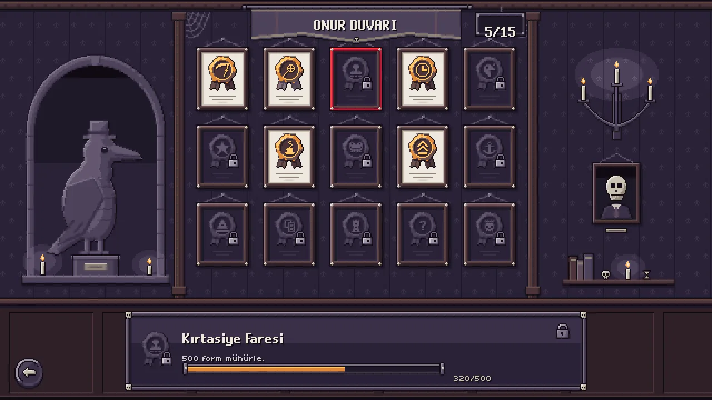
Onur Duvarı.
14 · MADDEEbedi Mesai
Hikâyeyi bitirdikten sonra oyun bitmez. Ebedi Mesai'de Ölmeyenlerin Diyarı'nda sınırsız ay oynarsınız. Kota her ay %10 büyür; patron ayı ve terfi yoktur. Tutan her ay serinizi 1 artırır, tutmayan ay sıfırlar ve en uzun seriniz rekor olarak saklanır. Uyarı ve reenkarnasyon kuralları sürer.
"Ebedi Mesai, 1. ay. Ölüm bitmez, mesai de." — Bay Kuzgun
15 · MADDEYeni başlayanlar için ipuçları
Kota mühürle tutar, biçmeyle değil. Çuvalı dolu bir stajyer kotayı kaçırabilir. Ay bitmeden ofise dönmeyi unutmayın.
Çuval doluysa biçmeyi bırakmayın. Biçme yine gecikmeyi önler; ruh kaçar ama kotadan düşmezsiniz.
Mükemmel mühür iki kat para demek. İlk Mühür'lerinizi Geniş Hedef ve Mürekkep Kalitesi'ne yatırmak çabuk geri döner.
Katlar kalıcıdır, oda geliştirmeleri değil. Terfiden önce kalan Mühür'ü kat açmaya harcayın.
Yatakhane erken açılmaya değer. İskelet Kâtip siz dünyadayken mühürlemeye devam eder.
Patron ayına hazırlıklı girin. Patron ayın ortasında gelir. O sırada çuvalda yer açık olsun.
Bekleme sırasında sokağı tarayın. Kayıp eşyalar ve Akçe, Kuzgun Sürüsü'nün halkasını doldurur ve bakkalda işe yarar.
Reenkarnasyon ceza değil. Kurbağa olmak komik; geri döndüğünüzde Ruh Tecrübesi ile biraz daha güçlüsünüz.
16 · MADDEGizlilik politikası / Privacy policy
Son güncelleme: 26 Kasım 2026 · Geliştirici: SE Logic · İletişim: theselogic@gmail.com
Türkçe
Toplanan veriler. Department of Death (Ölüm Dairesi) kişisel veri toplamaz. Oyunda hesap açma, reklam, analitik veya takip aracı yoktur. Oyunun ilerlemesi (kayıt dosyası) ve ayarlar yalnızca cihazınızda saklanır.
Google Play Games / Steam. Bu hizmetleri kullanırsanız başarımlarınız ve (açarsanız) bulut kaydınız ilgili platforma gönderilir. Bu veriler Google'ın veya Valve'ın kendi gizlilik politikalarına tabidir; SE Logic bu verileri ayrıca toplamaz veya saklamaz.
Değerlendirme. "Değerlendir" butonu Google Play'in uygulama içi değerlendirme penceresini veya mağaza sayfasını açar. Puanınız doğrudan Google'a gider.
Çocuklar. Oyun 13 yaş ve üzeri için tasarlanmıştır ve çocuklardan bilerek veri toplamaz.
Verilerinizi silmek. Oyunu kaldırdığınızda cihazdaki kayıt ve ayarlar silinir. Play Games veya Steam verileriniz için ilgili hesabınızın ayarlarını kullanın.
Değişiklikler. Bu politika değişirse güncel hali bu sayfada yayınlanır.
Data we collect. Department of Death does not collect personal data. There are no accounts, ads, analytics or tracking in the game. Your progress (save file) and settings are stored only on your device.
Google Play Games / Steam. If you use these services, your achievements and (if you turn it on) your cloud save are sent to that platform and are covered by Google's or Valve's own privacy policies. SE Logic does not collect or store this data separately.
Ratings. The "Rate" button opens Google Play's in-app review or the store page. Your rating goes straight to Google.
Children. The game is designed for ages 13 and up and does not knowingly collect data from children.
Deleting your data. Uninstalling the game removes the save and settings from your device. For Play Games or Steam data, use your account settings there.
Changes. If this policy changes, the current version is published on this page.